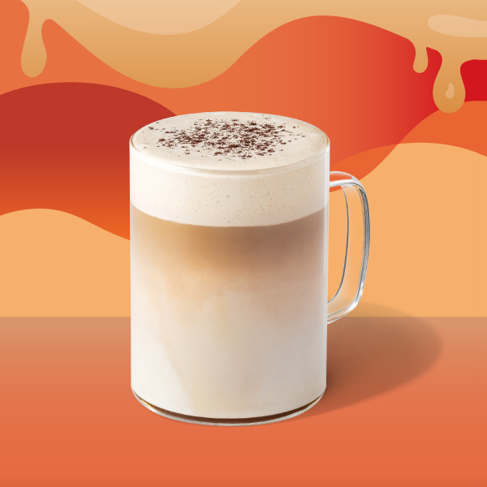

濃萃義式厚那堤
Espresso Trio Latte
三倍濃縮的極致厚實感，與絲滑熱鮮奶交織出更濃郁、更具深度的那堤體驗。適合熱愛深焙咖啡層次的您。
製作步驟
1
萃取精華
精選星巴克家常豆，連續萃取三份（Triple Shot）高品質濃縮咖啡。
2
牛奶預熱
將新鮮全脂鮮奶加熱至 65-70°C，透過蒸氣攪打出細緻滑順的微奶泡。
3
風味融合
將熱鮮奶緩緩倒入杯中，保留頂部薄薄一層奶泡完成製作。